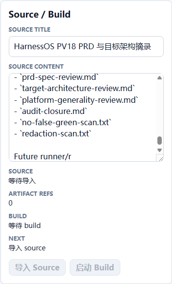
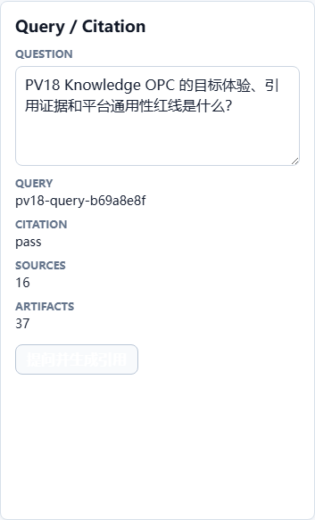
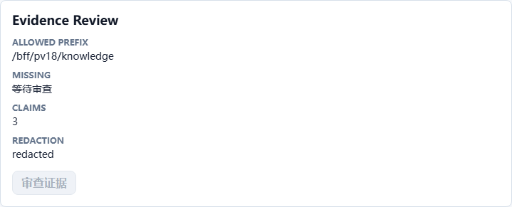

PV18 Knowledge OPC 阶段性审计与自动化验收报告
本报告基于 2026-06-27 重新执行的代码检视、文档审计、真实 data_service MCP 预检、PV18 BFF 测试、前端构建、CDP 浏览器 E2E、截图证据和 acceptance runner 结果生成。 结论只覆盖 PV18 bounded review，不扩大为生产级、完整 Workflow Studio、完整 Agent executor 或完整商业 Knowledge 产品声明。
阶段性验收：PASS
真实数据路径data_service_mcp / mcp_stdio
浏览器边界仅调用 /bff/pv18/knowledge/*
引用证据citation source refs: 16
发布门槛auto_publish_allowed=false
平台通用性knowledge_only_platform_changes=[]
场景覆盖11 个 PV18 验收场景
文档一致性旧 planned 口径已同步
审计结论无致命/重大偏差
原始 PRD 对照结论
| PRD 能力 | 当前实现证据 | 结论 |
|---|---|---|
| 进入 Knowledge OPC 工作台 | ?studio=pv18-knowledge-opc 渲染 PV18 工作台并截图。 | PASS |
| 创建或选择 workspace 并显示 connector health | GET /bff/pv18/knowledge/state 和工作台卡片显示 scope、workspace、connector、execution。 | PASS |
| 导入 source/document 并形成 artifact lineage | source-ingest-report.json、source/build 截图和 artifact lineage 报告。 | PASS |
| 发起 query 并审查 citation | knowledge-query-report.json 显示 citation coverage pass，source refs 为 16。 | PASS |
| quality feedback 与 correction plan | quality-correction-report.json 显示 requires_human_review=true。 | PASS |
| Evidence 视图审查 route、claim、redaction | evidence-review-report.json、bff-route-log.json、browser-network-log.json。 | PASS |
目标架构与当前架构实现
- 目标架构：Browser -> PV18 BFF -> Gateway / ConnectorExecutionRuntime -> data_service_mcp -> Evidence。
- 当前实现：
PV18KnowledgeOpc通过workflowConsoleClient调用/bff/pv18/knowledge/*；BFF 通过KnowledgeMcpWorkflowRunner调用真实 data_service MCP。 - 目标架构：source、build、query、quality、correction、evidence 必须形成可审查 DTO 和证据链。
- 当前实现：证据包包含 DTO 快照、artifact lineage、BFF route log、browser network log、claim matrix、redaction scan 和截图。
- 平台红线：本阶段没有为 Knowledge OPC 增加 workflow core、Gateway core、connector runtime 或 App shell 的业务专用分支。
用户体验路径截图



自动化测试结果
- 真实 data_service MCP 预检：PASS。
- PV18 BFF 与 acceptance runner 单测：PASS。
- 前端 TypeScript、操作客户端单测和 Vite build：PASS。
- Chrome CDP headless E2E：PASS，并重新生成截图证据。
- PV18 acceptance runner：PASS，无缺失 artifact，无 forbidden browser route，无 citation bypass。
文档审计与概念一致性
TASKS.md、current-mainline-development-options.md、PV18 PRD、PV18 目标架构和 V12-V15 入口索引已同步为 PV18 bounded review implementation passed。- 文档继续保留 No-Go：不能把 PV18 说成生产级、完整 Studio、完整 Agent executor、Xpert 等价或完整商业 Knowledge 产品。
- 当前报告、证据包和 acceptance runner 的 allowed claim 一致：
PV18 complete: Knowledge OPC productization implementation ready for bounded review.
剩余风险和不实声明防线
- Linux Playwright Chromium 依赖仍缺少
libnspr4.so，本轮使用 Windows Chrome CDP headless 生成截图；CI 镜像仍需单独 hardening。 - data_service MCP 依赖本地
/mnt/c/workspace/data_service/backend/.venv-wsl，迁移 CI 时需要固定安装步骤。 - PV18 当前只支持 bounded review，不覆盖多租户生产隔离、生产部署回滚、完整权限治理或长时任务恢复。
关键证据文件
docs/design/V12-V15.x/evidence/pv18-knowledge-opc-productization/acceptance-data.jsondocs/design/V12-V15.x/evidence/pv18-knowledge-opc-productization/knowledge-query-report.jsondocs/design/V12-V15.x/evidence/pv18-knowledge-opc-productization/browser-network-log.jsondocs/design/V12-V15.x/evidence/pv18-knowledge-opc-productization/bff-route-log.jsondocs/design/V12-V15.x/reports/pv18_knowledge_opc_productization_acceptance_report.jsondocs/design/V12-V15.x/reports/pv18_stage_execution_and_audit_closure.md